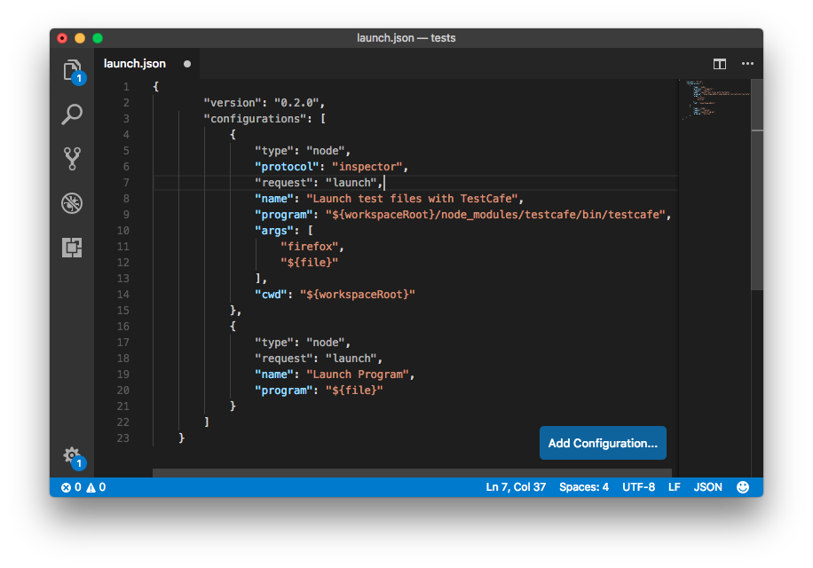
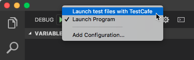
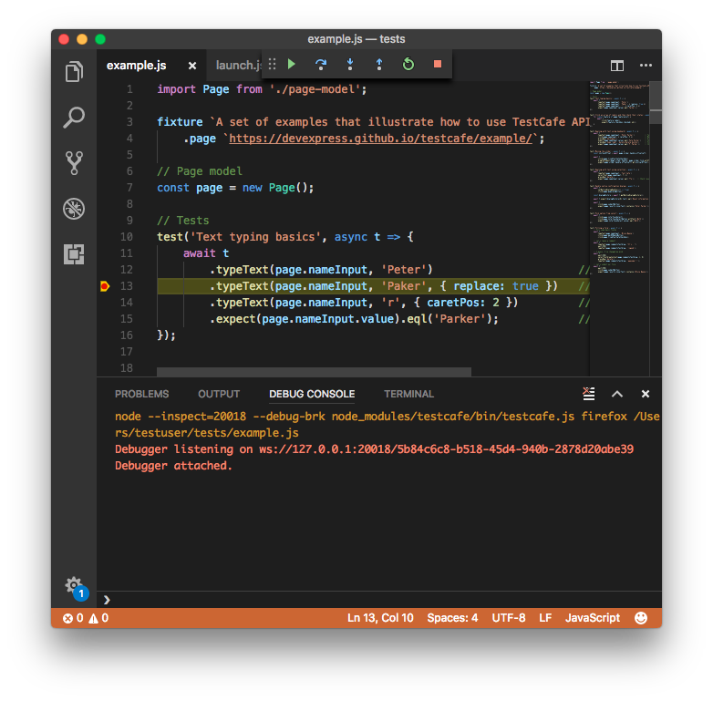

Debug in Visual Studio Code
Before you debug in Visual Studio Code, ensure that your root test directory contains a package.json file that includes testcafe in the devDependencies section.
{
"devDependencies": {
"testcafe": "x.y.z"
}
}
where x.y.z is the TestCafe version you use.
Then you need to install TestCafe locally in the test directory.
npm install
The next step adds a launch configuration used to run TestCafe tests.

See the Visual Studio Code documentation to learn how to create a configuration.
You need to add the following configuration to the launch.json file.
{
"type": "node",
"protocol": "inspector",
"request": "launch",
"name": "Launch test files with TestCafe",
"program": "${workspaceRoot}/node_modules/testcafe/bin/testcafe.js",
"args": [
"firefox",
"${file}"
],
"console": "integratedTerminal",
"cwd": "${workspaceRoot}"
}
This configuration contains the following attributes:
type- specifies the configuration type. Set tonodefor a Node.js configuration.protocol- specifies the Node.js debugger wire protocol. Note that the inspector protocol is supported in Node.js v6.3 (or v6.9 for Windows) or later. For early versions, omit this property. In that case, Node.js uses a legacy debugger protocol. The legacy protocol has issues with source map support, therefore newer versions of Node.js are recommended.request- specifies the request type. Set tolaunchsince this configuration launches a program.name- specifies the configuration name.program- path to the executed JS file. In this case, this file is the TestCafe module.args- command line arguments passed to the launched program. In this case, they specify the browser in which the tests should run and the test file.console- the console where the test run report is printed. In this case, the report is output to the integrated terminal. You can learn about other available values in the Launch.json attributes topic.cwd- the current working directory. Set to the workspace root.
Save the launch.json file. The new configuration then appears in the configuration drop-down.

Now you can open a file with TestCafe tests, select the "Launch test files with TestCafe" configuration and click the Run button.
Tests run with the debugger attached. You can put breakpoints in test code and the debugger stops at them.

If you do not select the
"Launch test files with TestCafe"configuration, Visual Studio Code tries to run the test file as a program and throws an error.